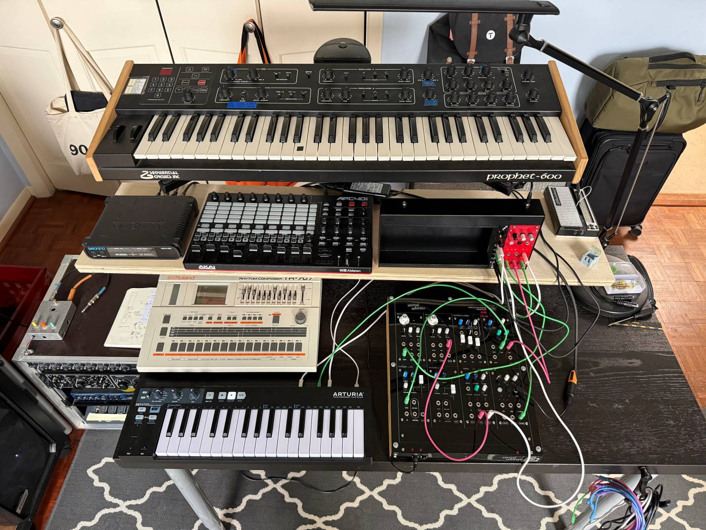

Notes
I checked in on the Shmoerg Brain lately and they'd added some new firmware called CV Utils. It's a bit like the Disting Mk4, and also like a project I was thinking about writing myself, with six different functions muxed into one UF2 file: utils like an Adder, a Slew Limiter, and a Pseudo-Random CV with a builtin quantizer, which is what I used on this track. I had previously done something similar by routing the noise output from a VCO to the quantizer in the Disting Mk4, but this conveniently does both at the same time. It doesn't have the same level of complexity for the scales/modes that you can quantize to, but it has the basics (major, minor, chromatic, pentatonic, whole tone) and it worked great for this track.
Having the Disting free as a clockable delay was great, and I got the Prophet on board via its MIDI sync - always a little fussy to get set up but works well once the clock divider locks in properly.
I spent some time in Ableton getting a decent arrangement from the weird pile of jammed-out session clips that I had after playing around for a while.